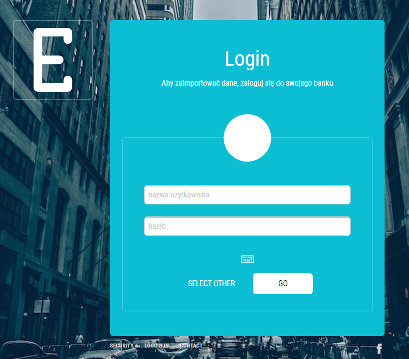
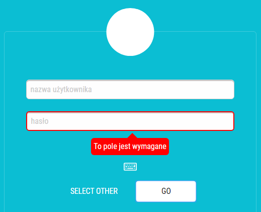
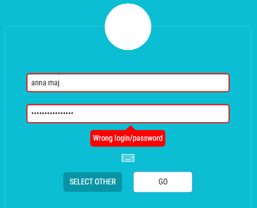

Ekran logowania do bankowości elektronicznej.




Ekran logowania do bankowości elektronicznej.
Skondensowane informacje na temat najważniejszych produktów klienta, historia operacji oraz aktualny bilans finansowy, a także bardziej szczegółowa analiza wydatków i wpływów na konto w postaci wykresów. Centrum zarządzania kontem, przekierowujące do kolejnych funkcjonalności (przelewów, historii).
Bardziej rozbudowana historia operacji finansowych na koncie. Z możliwością wyszukiwania oraz filtrowania danych.
Formularz wypełniany przez klienta podczas wykonywania przelewu środków.